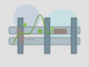

わびさびポイント2：[ここに名称]

クエスト：風雪に耐えし鉄の軌跡
名もなき道端に佇む、寂れたガードレール。赤茶けた錆は、まるで長年戦い抜いた古強者の鎧のようだ。 かつては銀色に輝いていたのだろうか？その歴史に思いを馳せ、風雪が刻んだ模様を心に刻め。
わびさびEXP：40 / 50 (発見難易度：★★★☆☆)
攻略ヒント：交通量の少ない裏道を探せ。夕日に照らされると、錆が一層味わい深い輝きを放つという。
＜＜ ミッション一覧へ戻る